QA Workflow.
사용 가이드 · USER GUIDE
VOL. 01 · 2026.07
QA 업무의 하루를
한 화면에서
하루의 QA 업무를 한 화면에서 관리하는 실무 도구, QA Workflow입니다. 프로젝트-빌드-일감을 하나의 흐름으로 연결하고, 대시보드 한 화면에서 오늘 챙겨야 할 일과 팀 상태를 확인할 수 있습니다. 이 가이드는 처음 이용하는 분도 화면을 따라가며 바로 시작할 수 있도록 구성했습니다.
▸ Menus
12
사이드바 메뉴
▸ Roles
4
역할 (관리자·매니저·멤버·뷰어)
▸ QA Stages
8
QA 진행 8단계
▸ Themes
4
테마 (기본·의료모니터·픽셀·네온)
→ 오른쪽으로 넘겨서 목차부터 확인해 보세요. 키보드 ← → 로도 이동할 수 있어요.
QA Workflow.
CONTENTS
02 / 21
목차 Table of Contents
QA Workflow.
INTRODUCTION
03 / 21
QA Workflow란? Core Concepts
처음 보면 낯선 용어 4개만 알면, 나머지는 자연스럽게 이해돼요.
No. 01
프로젝트
Project
게임 하나에 해당하는 최상위 단위입니다. 팀 소속(PQA1 등)을 가지며, 그 안에서 빌드와 일감이 관리됩니다.
No. 02
빌드
Build = 수급 차수
개발팀으로부터 받은 "수급 차수"입니다. 예: "3", "3-1". 정기 업데이트(UPDATE)와 긴급 수정(HOTFIX) 두 목적이 있고, 8가지 상태를 거쳐 배포됩니다.
No. 03
일감
Task
실제로 수행하는 QA 업무 한 건입니다. 담당자·테스터·진행률·타이머를 가지며, 필요 시 특정 빌드에 연결됩니다.
No. 04
이슈
Issue
JIRA에 등록된 버그·이슈를 읽기 전용으로 조회하는 화면에서 다루는 대상입니다. 일감 내부의 "이슈" 항목과는 다른 개념이니 혼동하지 마세요.
가장 중요한 구분 — "빌드=수급 차수"는 개발팀에서 QA팀으로 넘어오는 물리적인 버전 묶음이고, "일감"은 QA팀이 그 안에서 실제로 처리하는 업무 단위입니다. 빌드 하나에 여러 일감이 연결될 수 있고, 아직 빌드가 없는 "예정 일감"도 존재합니다.
QA Workflow.
GETTING STARTED
04 / 21
시작하기 Login & Approval
Step 01
로그인
이름과 비밀번호로 로그인합니다(이메일 아님). 계정이 없다면 가입 신청을 먼저 진행하세요.
Step 02
승인 대기
가입 신청 후에는 관리자의 승인이 필요합니다. 승인 전까지는 로그인이 제한돼요 — 조급해하지 않으셔도 됩니다.
Step 03
이용 시작
관리자가 승인하면 바로 이용 가능합니다. 이때 역할(관리자/매니저/멤버/뷰어)이 함께 부여됩니다.
가입 신청→
관리자 승인 대기→
승인 완료 · 역할 부여→
로그인 & 이용
내 역할이 궁금하다면 — 설정 메뉴에서 확인할 수 있어요. 역할에 따라 보이는 메뉴와 할 수 있는 조작이 달라지니, 헷갈리면 19페이지 "권한 안내"를 참고하세요.
QA Workflow.
DASHBOARD
05 / 21
대시보드 Home
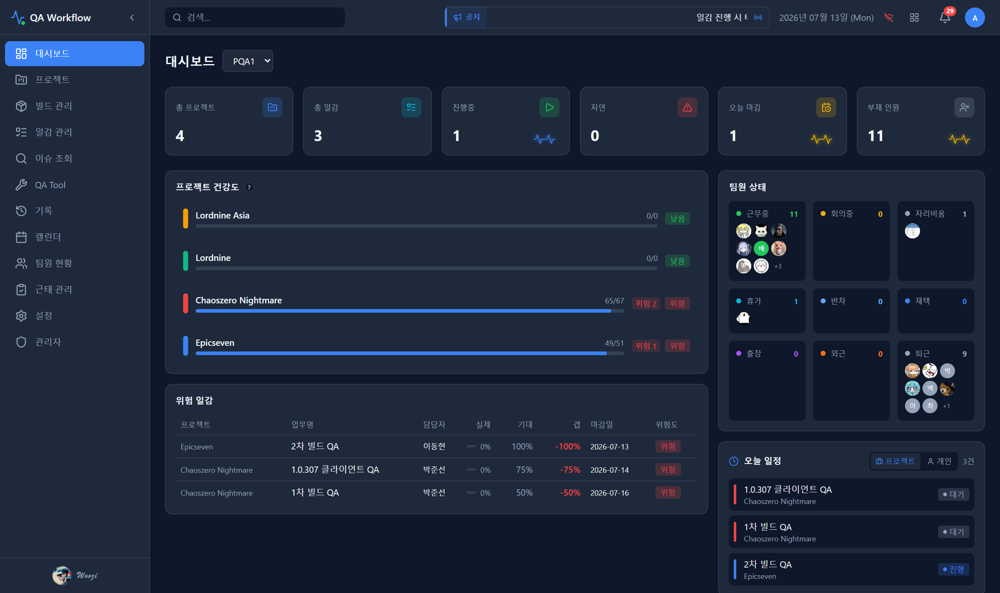
로그인 후 가장 먼저 보이는 화면 — 전체 QA 운영 현황을 한눈에 확인합니다.
이 화면에서 확인할 수 있는 것
- KPI 카드 — 총 프로젝트 수, 총 일감 수, 진행중 일감 수, 지연 일감 수, 오늘 마감 일감 수, 결근 인원 수
- 프로젝트 건강도 리스트 + 위험 일감 테이블
- 팀 상태 요약 + 오늘 일정 위젯
- 상단 팀 필터로 팀별 데이터 필터링
헷갈리기 쉬운 점 — KPI의 "총 일감"은 완료/취소된 일감을 제외한 활성 일감 수입니다. 전체 등록 일감 수가 아니에요. "결근 인원"도 휴가+자리비움 세부항목+퇴근 상태를 모두 합산한 값입니다.
QA Workflow.
PROJECT
06 / 21
프로젝트 Kanban · Timeline · Builds
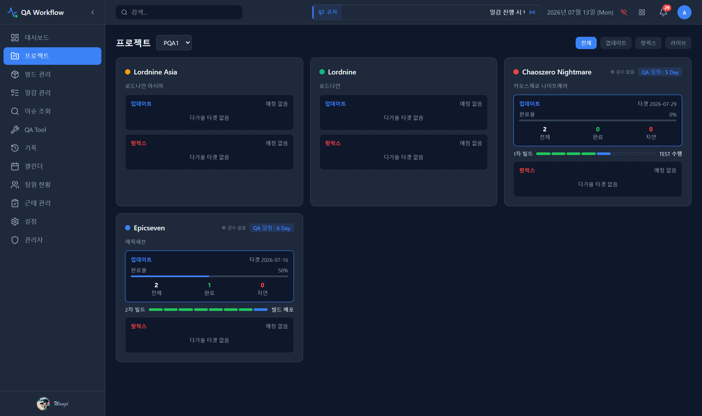
프로젝트 상세 화면 — 리스트/칸반/타임라인 탭과 목적 필터로 일감을 조회합니다.
목적 필터 4종
- ALL — 가장 최근 업데이트 차수에 연결된 일감 + 아직 빌드에 연결 안 된 예정 일감
- BUILDS — 빌드 자체 목록/칸반/타임라인
- PENDING — 어떤 빌드에도 연결되지 않은 일감만
추가 요소
- 마켓 검수 상태 카드(App Review Status) — 스토어 심사 진행 단계 표시
- 빌드 QA 8단계 진행 HUD — 현재 UPDATE 빌드가 어느 단계인지 요약
"예정 일감"이란 — 아직 빌드가 배정되지 않은 일감입니다. 빌드가 수급되면 자동으로 해당 차수에 흡수되어 ALL 탭에 나타나요. 프로젝트 생성/수정은 관리자·매니저만 가능합니다.
빌드 관리 Build = 수급 차수
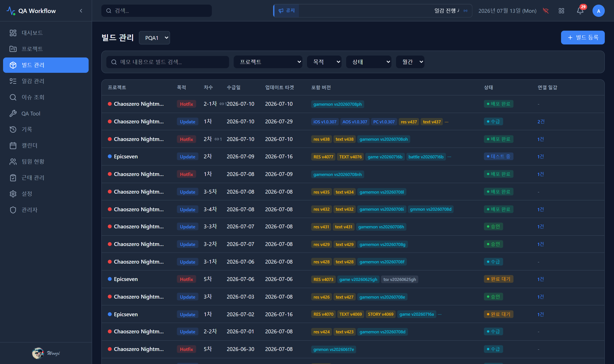
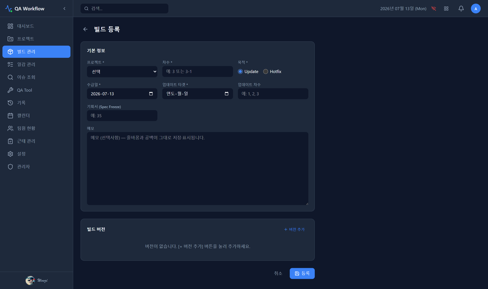
위: 빌드 목록 · 아래: 빌드 생성 폼(관리자·매니저 전용)
빌드 개념
- buildOrder("3", "3-1" 등)로 차수를 표시, purpose는 정기 업데이트(UPDATE) / 긴급 수정(HOTFIX)
- 생성/수정/삭제/상태변경은 관리자·매니저만 가능
- 버전 관리(APP/CDN/SERVER/DB/ETC, iOS/AOS/PC), TC 엑셀 업로드로 통계 자동 채움
- 핫픽스 빌드끼리는 서로 링크로 그룹핑 가능
빌드 상태 8단계
| 상태 | 의미 |
|---|
| RECEIVED | 수급 |
| TESTING | 테스트중 |
| COMPLETION_PENDING | 완료대기 |
| TEST_DONE | 테스트완료 |
| APPROVED | 승인 |
| RELEASED | 배포완료(종결) |
| REJECTED / DISCARDED | 반려 / 폐기(종결) |
주의 — 빌드 상태 변경 버튼은 일반 멤버에게는 보이지 않거나 비활성입니다. TEST_DONE으로 넘길 때는 확인 모달이, REJECTED로 넘길 때는 반려 사유 입력이 필수예요.
QA Workflow.
QA STAGE HUD
08 / 21
빌드 QA 진행 8단계 QaStage HUD
빌드 상태(위 페이지의 8상태)와는 완전히 별개인, UPDATE 빌드 전용의 진행 단계입니다. 반드시 구분해 이해하세요.
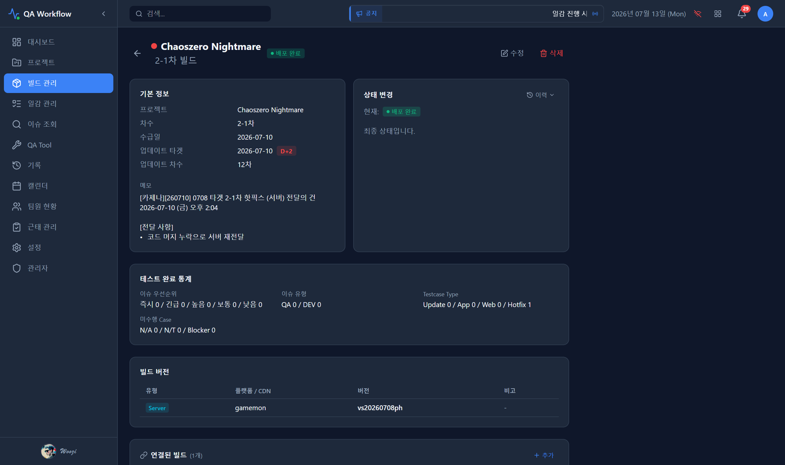
빌드 상세 화면의 QA 진행 8단계 HUD
8단계
1.기획서수급→
2.빌드수급→
3.기획리뷰→
4.TC작성
5.TEST수행→
6.TEST완료→
7.결과리포트→
8.빌드배포
- 전진(다음 단계로)/후진(되돌리기) 버튼으로만 이동 — 임의 단계 점프 불가
- 기록은 이벤트 로그(append-only)로 쌓이며, 현재 단계는 이벤트를 재생해서 계산됩니다
- 조회는 전원 가능, 전진/후진 조작은 관리자·매니저·멤버 가능(뷰어 제외)
왜 헷갈리나요 — "빌드 상태"(RECEIVED→TESTING→…→RELEASED)는 빌드 자체의 승인 워크플로이고, "QA 8단계"는 그 안에서 QA팀이 실제로 밟는 실무 절차 체크리스트입니다. 두 트랙은 함께 움직이지만 서로 다른 값이에요. 예를 들어 빌드 상태가 TESTING이어도 QA 8단계는 아직 3단계(기획리뷰)일 수 있습니다.
일감 관리 Task
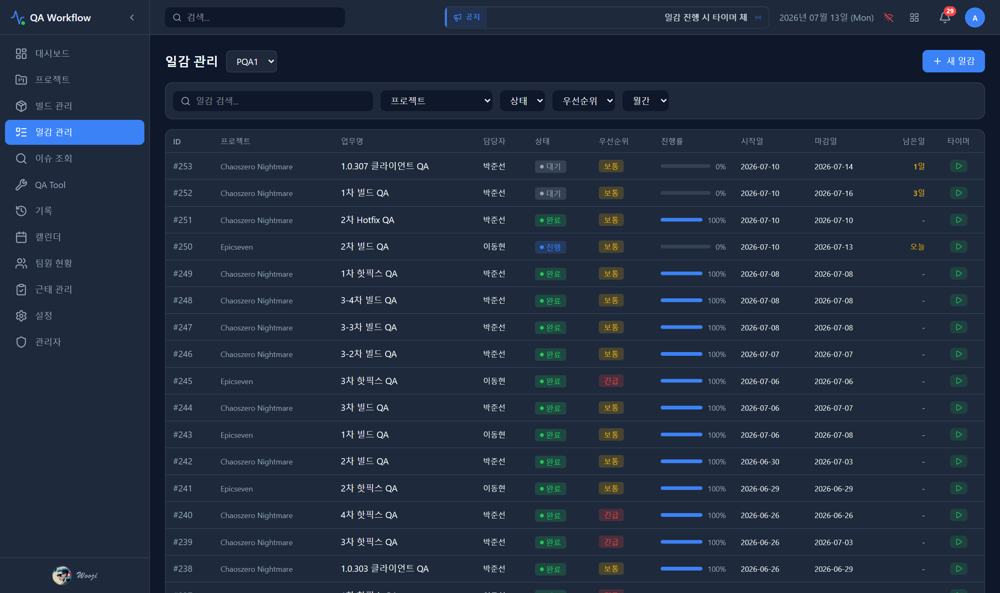
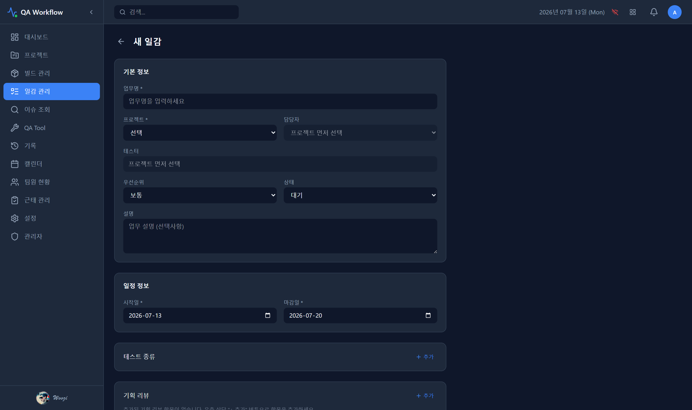
위: 일감 목록(필터·검색) · 아래: 일감 생성 폼
목록 화면
- 필터: 프로젝트/상태/우선순위/월간, 검색은 디바운스 300ms
- URL 쿼리로 "지연만"(riskLevel=OVERDUE), "오늘마감"(dueToday=true) 등 특수 필터 진입 가능 — 대시보드 카드 클릭 시 이 방식으로 이동
생성 폼 필드
- 제목/설명/프로젝트/담당자/우선순위/상태/시작일/마감일/메모
- 테스트종류 반복입력, 기획리뷰 반복입력, 테스터(다중 선택)
- 연결 빌드 타겟 및 빌드 선택(선택 입력)
상태 전이 — 대기(PENDING) → 진행(IN_PROGRESS) → 완료(DONE), 중간에 보류(ON_HOLD)/중단(CANCELED)도 가능합니다. 조회는 전원, 생성·수정·삭제·타이머는 뷰어를 제외한 전원 가능해요.
타이머 Task Detail > Timer
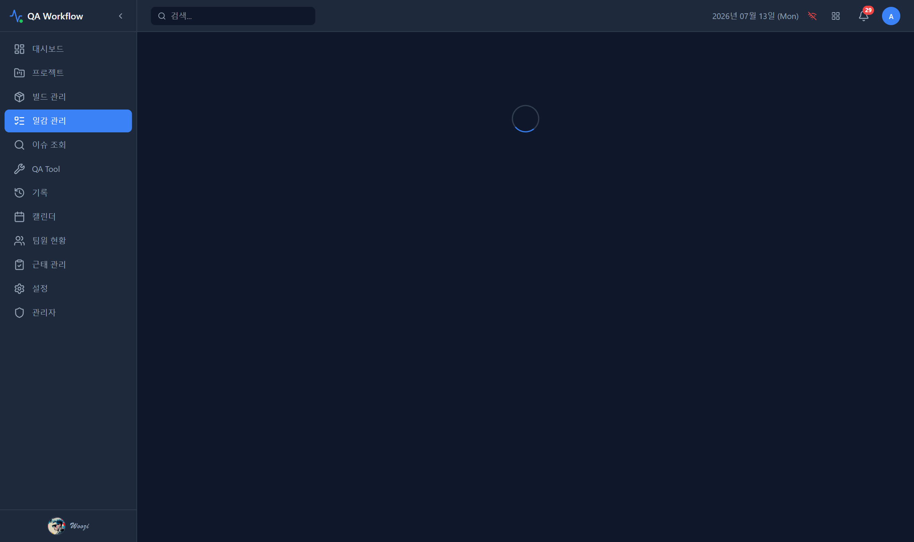
일감 상세 화면 — 타이머 및 진행 갭 분석 영역
기본 조작
- 시작/정지 버튼으로 작업 시간 자동 누적
- 정지 시 소요 시간(duration)이 자동 계산되어 기록
- 수동 시간 보정 — 누락·오기록 시 시/분 단위로 증가·감소 가능(감소 시 누적 부족하면 실패)
- 관리자·매니저·멤버 전원 사용 가능(뷰어 제외)
진행 갭 & 필요 속도
- 실제 진행률 vs 기대 진행률(경과일 비율)을 비교해 자동 산출되는 지표 — 직접 입력하지 않음
- "진행 갭"이 음수면 지연, "필요 속도"는 남은 기간 내 100% 달성에 필요한 일일 진행률
대시보드와의 연결 — 이 갭이 커지면 위험도(RiskLevel)가 자동으로 올라가고, 대시보드의 "위험 일감 테이블"에 노출됩니다. 타이머를 켜두는 것만으로 위험도가 낮아지지 않는다는 점 참고하세요 — 실제 진행률 갱신이 함께 필요합니다.
QA Workflow.
ISSUES (JIRA)
11 / 21
이슈 조회 JIRA · Read-only
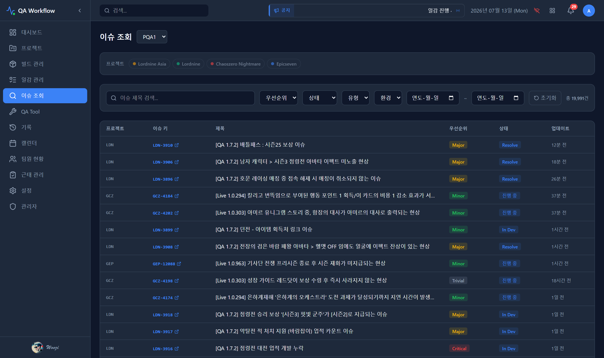
JIRA 이슈를 읽기 전용으로 조회하는 화면입니다.
조작 순서
- 프로젝트 칩(JIRA 매핑된 프로젝트만 노출) 선택
- 필터(우선순위/상태/유형/환경/기간)로 좁히기
- 이슈 키 클릭 → JIRA 원본 페이지가 새 탭으로 열림
- 페이지네이션 50건 단위
헷갈리기 쉬운 점 — 이 화면에는 쓰기 기능이 전혀 없습니다(조회 전용). 프로젝트를 선택하지 않으면 팀 필터로 좁혀진 전체 매핑 프로젝트가 대상이 되고, "JIRA 매핑된 프로젝트가 없습니다"라는 안내가 뜨면 그 프로젝트는 아직 JIRA 연동이 안 된 것입니다. 일감 상세의 "이슈"와는 다른 별개 모델이니 혼동 주의하세요.
QA Workflow.
QA TOOL
12 / 21
QA Tool Jenkins · TestRail
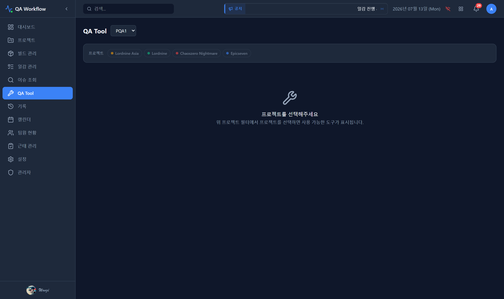
Jenkins/TestRail 연동 도구 모음 — 프로젝트 선택이 먼저 필요합니다.
탭 구성
- 버전 체크, 서버 시간 — 전원 이용 가능
- CDN 패치, 서버 배포 — 관리자·매니저만(설정된 Jenkins 프로젝트에 한함)
- 즐겨찾기 탭 — jobPrefix가 'epic' 또는 'czn'인 프로젝트만 노출
- TestRail 탭 — 프로젝트 선택 시 항상 노출(매핑 없으면 탭 내부에 안내)
주의 — Jenkins 설정이 없는 프로젝트는 버전체크/서버시간/CDN패치/서버배포 탭 자체가 노출되지 않습니다. 프로젝트를 먼저 선택해야 탭이 나타나요.
QA Workflow.
HISTORY
13 / 21
기록 History & Trend
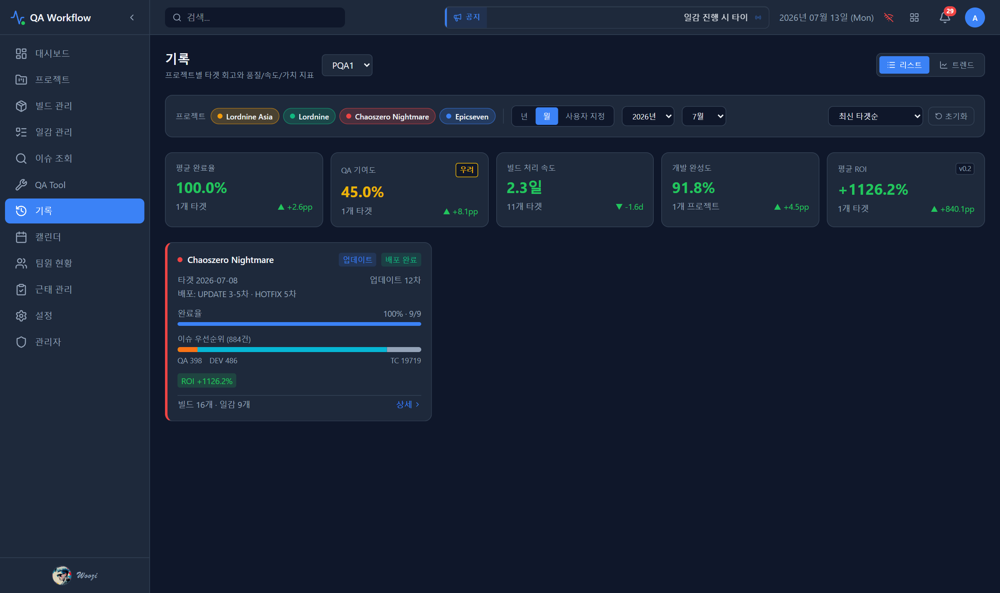
프로젝트별 히스토리 요약과 트렌드 차트를 확인하는 화면입니다.
이 화면에서 할 수 있는 일
- 리스트 뷰 — 프로젝트별 히스토리 요약 카드
- 트렌드 뷰(?view=trend) — 월간 또는 업데이트차수(단일 프로젝트 선택 시) 단위 차트
- 상세 모달에서 빌드/이슈/리소스 상세 확인
- 설정 > 데이터 관리에서 Excel 동기화 및 CSV 내보내기(38컬럼) — 관리자·매니저 전용
참고 — 동기화 실행 버튼은 관리자·매니저에게만 보입니다. 일반 조회는 전원 가능해요.
QA Workflow.
CALENDAR
14 / 21
캘린더 Monthly · Gantt
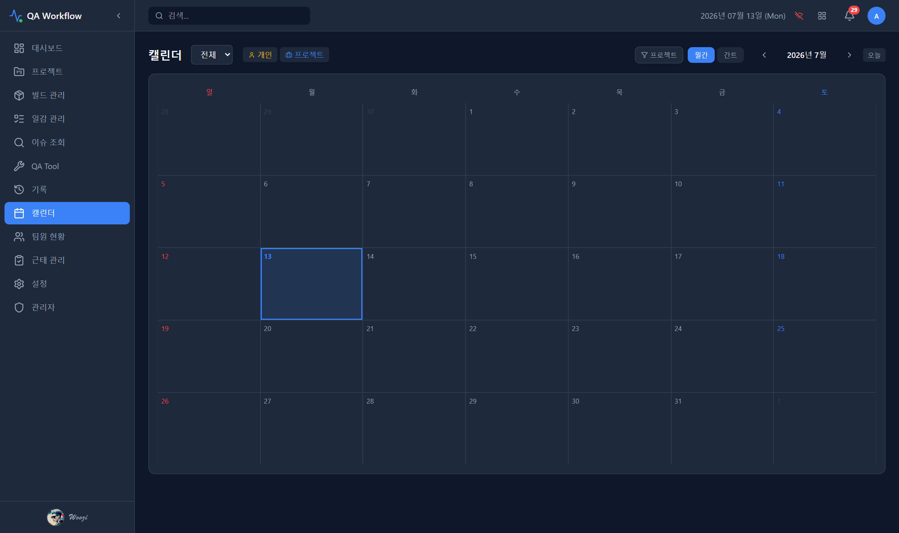
월간 캘린더와 간트 타임라인, 두 가지 보기 방식을 제공합니다.
이 화면에서 할 수 있는 일
- 개인 일정(휴가/출장/반차/재택/회의/기타)과 프로젝트 일감 일정을 토글로 개별 표시/숨김
- 날짜 클릭 또는 일정 클릭 → 일정 생성/수정 모달 오픈
- 프로젝트 필터(다중 선택) 지원
참고 — 일정 쓰기(생성/수정)는 관리자·매니저·멤버 가능(뷰어 제외). 조회는 전원 가능합니다.
QA Workflow.
TEAM & PIXEL OFFICE
15 / 21
팀원 현황 & 픽셀 오피스 Team Status
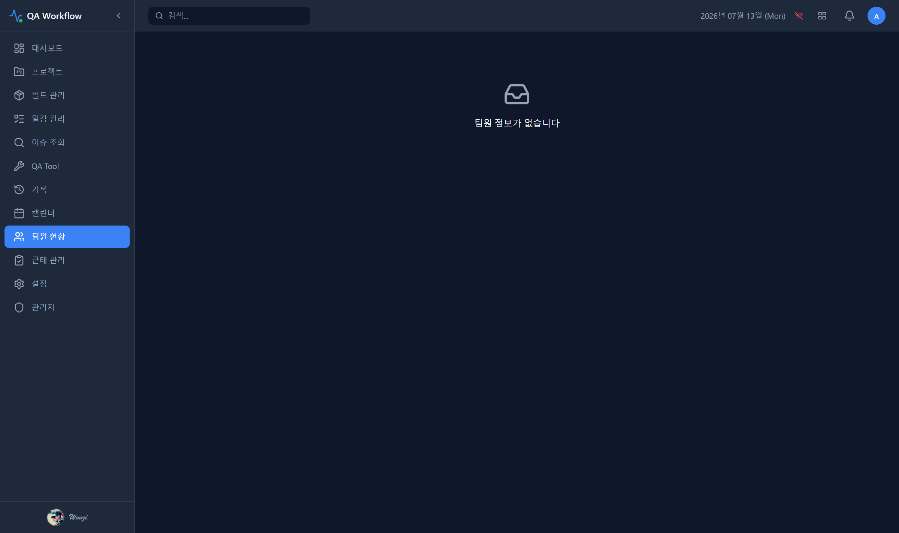
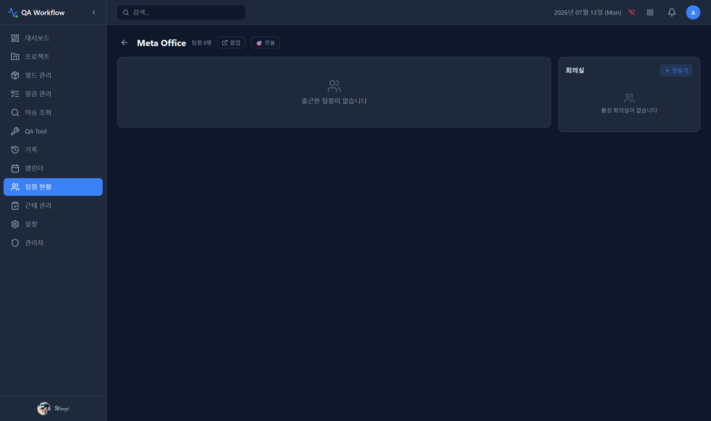
위: 팀원 현황(멤버 카드·상태보드·워크로드) · 아래: Meta Office(픽셀 오피스)
팀원 현황
- 멤버 카드 그리드 + 상태보드 + 워크로드 패널
- 상태(14종) 필터, 팀 필터, 프로젝트 필터
- 정렬 우선순위: 근무중 > 회의중 > 자리비움 > 외근 > 반차 > 휴가 > 출장 > 퇴근
- 본인 상태 변경은 관리자·매니저·멤버 가능
Meta Office(픽셀 오피스)
- "Meta Office" 버튼으로 진입하는 픽셀 아트 화면
- 실시간 근무중 인원수 배지 표시
참고 — 출근하지 않은 사용자는 클라이언트에서 "퇴근"으로 표시가 오버라이드됩니다. 실제 상태와 다르게 보일 수 있어요.
QA Workflow.
ATTENDANCE
16 / 21
근태 관리 Monthly · Personal · Project
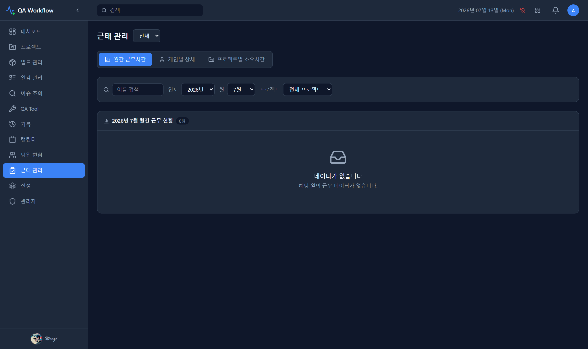
월간 근무시간 / 개인별 상세 / 프로젝트별 소요시간, 3개 탭으로 구성됩니다.
근태 종류
- 휴가 / 반차 / 재택 / 출장 / 외근 등을 등록해 근무 상태에 반영
- 본인 근태 정정 요청은 전원 가능
- 정정 승인/반려는 관리자(ADMIN) 전용(관리자 본인 요청은 즉시 승인 처리)
알아두면 좋은 점 — 2026-05-25 이후 "추가 근무 수당" 관련 기능은 완전히 제거되었습니다. 월간 총 근무시간은 본인 또는 관리자가 직접 입력하는 방식이며, 별도 출퇴근 체크(태깅) 시스템은 더 이상 사용하지 않습니다.
QA Workflow.
SETTINGS
17 / 21
설정 Preferences
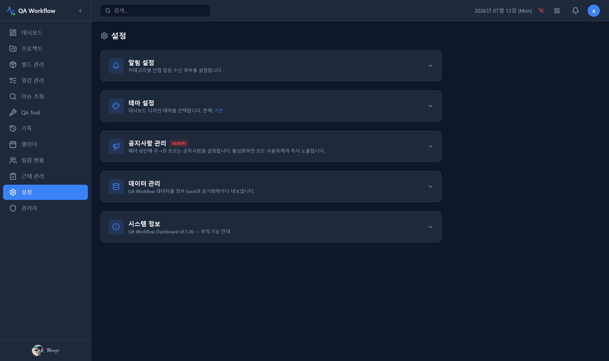
접이식 카드 5종으로 구성된 개인/관리 설정 화면입니다.
카드 구성
- 알림 설정 — 카테고리별(내 일감/빌드/회의/시스템/관리자) 인앱+브라우저 알림 토글. 관리자 항목은 관리자·매니저만 노출
- 테마 설정 — 아래 4종 중 선택, 즉시 적용 + 브라우저 로컬 저장(본인 전용)
- 공지사항 관리 — 관리자 전용. 헤더 마퀴 텍스트/활성화/흐름속도 설정
- 데이터 관리 — 동기화 및 CSV 내보내기, 관리자·매니저만 실행 가능
- 시스템 정보 — 버전/핵심기능 안내(읽기 전용)
| 테마 | 분위기 |
|---|
| 기본 | Slate 다크 |
| Neural Grid | 의료모니터 느낌(set1) |
| Pixel Office | 픽셀 아트(set2) |
| Silicon Valley Cyberpunk | 네온(set3) |
관리자 Members & Approvals
"관리자" 메뉴는 관리자(ADMIN) 역할에게만 사이드바에 노출됩니다.
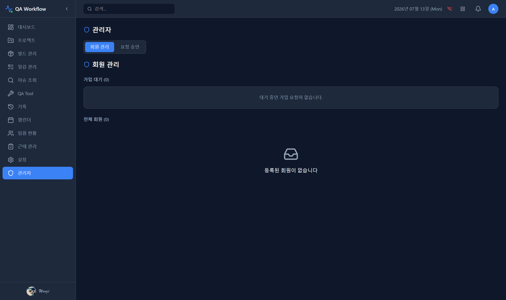
회원 관리 / 요청 승인, 2개 탭으로 구성됩니다(URL ?tab=approvals로 딥링크 가능).
회원 관리 탭
- 가입 대기 승인/거절
- 전체 회원 역할 변경(관리자/매니저/멤버/뷰어), 소속팀 수정
- 담당 프로젝트 토글, 비밀번호 초기화, 비활성화
- 완전 삭제 — 삭제 시 할당된 일감은 자동으로 미할당 상태로 전환됨
요청 승인 탭
- 근태 정정 요청 승인/반려 처리(추정 — 관리자 전용)
주의 — 이 메뉴 전체가 서버에서도 관리자 권한으로 강제되므로, 매니저 계정으로는 API 직접 호출로도 접근이 불가능합니다.
QA Workflow.
PERMISSIONS
19 / 21
권한 안내 Role Matrix
역할에 따라 보이는 메뉴와 할 수 있는 조작이 다릅니다. "내가 못 하는 게 정상"인 경우를 미리 알아두세요.
| 기능 | 관리자 | 매니저 | 멤버 | 뷰어 |
|---|
| 조회 전반 (프로젝트/빌드/일감/이슈) | ✅ | ✅ | ✅ | ✅ |
| 프로젝트 생성/수정 | ✅ | ✅ | ❌ | ❌ |
| 빌드 생성/수정/삭제/상태변경 | ✅ | ✅ | ❌ | ❌ |
| 빌드-일감 연결 / QA 8단계 전진·후진 | ✅ | ✅ | ✅ | ❌ |
| 일감 생성/수정/삭제 · 타이머 | ✅ | ✅ | ✅ | ❌ |
| 캘린더/근태/팀상태 쓰기 | ✅ | ✅ | ✅ | ❌ |
| QA Tool CDN패치/서버배포 | ✅ | ✅ | ❌ | ❌ |
| 기록 동기화 / 데이터 관리 실행 | ✅ | ✅ | ❌ | ❌ |
| 기록 백필(backfill) | ✅ | ❌ | ❌ | ❌ |
| 공지사항 관리 / 회원 관리 | ✅ | ❌ | ❌ | ❌ |
| 근태 정정 승인 | ✅ | ❌ | ❌ | ❌ |
뷰어(VIEWER)이신가요? — 뷰어는 모든 화면을 조회할 수 있지만, 쓰기 작업은 모두 서버에서 차단됩니다. 이는 오류가 아니라 의도된 읽기 전용 권한이에요. 권한이 필요하면 관리자에게 역할 변경을 요청하세요.
FAQ / 팁 자주 헷갈리는 것들
빌드 상태와 QA 8단계가 다르게 보여요. 버그인가요?
아닙니다. 빌드 상태(RECEIVED~RELEASED)와 QA 진행 8단계(기획서수급~빌드배포)는 완전히 다른 두 트랙입니다. 두 값은 각자 독립적으로 전진합니다.
타이머를 켜뒀는데 위험도가 안 낮아져요.
타이머는 시간을 누적할 뿐, 위험도는 실제 진행률 대비 기대 진행률(진행 갭)로 계산됩니다. 진행률을 직접 갱신해야 위험도가 반영돼요.
빌드 상태 변경 버튼이 안 보여요.
빌드 상태변경은 관리자·매니저 전용입니다. 일반 멤버 계정에는 버튼이 노출되지 않거나 비활성 처리됩니다.
로그아웃하면 자동으로 "퇴근" 처리되나요?
네, 로그아웃 시 서버에서 best-effort로 퇴근 처리를 시도합니다. 실패해도 로그아웃 자체는 정상 진행돼요.
"이슈 조회" 메뉴와 일감 상세의 "이슈"는 같은 건가요?
다릅니다. 사이드바 "이슈 조회"는 JIRA 이슈를 읽기 전용으로 보여주는 화면이고, 일감 내부의 "이슈"는 별개의 QA Workflow 자체 모델입니다.
뷰어(VIEWER) 계정으로 로그인했는데 버튼을 눌러도 반응이 없어요.
정상입니다. 뷰어는 모든 쓰기 작업에서 배제된 조회 전용 역할입니다. 서버에서 차단하기 때문에 프론트에서 눌러도 반영되지 않아요.
일감이 어떤 빌드에도 안 보여요.
아직 빌드에 연결되지 않은 "예정 일감"일 수 있습니다. 프로젝트 상세의 PENDING 필터에서 확인해 보세요. 빌드가 수급되면 자동으로 연결될 수 있습니다.
근태 정정을 요청했는데 언제 반영되나요?
본인이 관리자가 아니라면 관리자 승인이 필요합니다. 관리자 본인의 요청은 즉시 승인 처리됩니다.
테마를 바꿨는데 다른 팀원 화면에도 적용되나요?
아니요. 테마는 브라우저 로컬 저장이라 본인 화면에만 적용되고, 다른 사용자에게는 영향이 없습니다.
QA Tool에서 CDN패치/서버배포 탭이 안 보여요.
두 가지를 확인하세요 — 첫째, 프로젝트에 Jenkins 설정이 되어 있는지. 둘째, 본인 역할이 관리자·매니저인지(멤버·뷰어는 노출되지 않음).
End of Guide
QA Workflow.
궁금한 점은 팀 관리자에게 문의해 주세요.
이 가이드는 QA Workflow 서비스 구조 조사 결과를 바탕으로 작성되었습니다.
VOL. 01 · 2026.07 · USER GUIDE